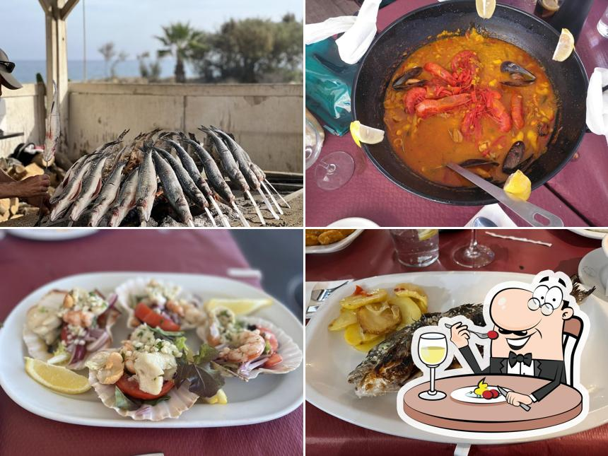

Acerca De
Conozca más sobre nosotros
Nuestra Historia
Fundado por la familia Ramos, llevamos más de 20 años sirviendo los auténticos espetos malagueños y pescado fresco frente al mar de Sabinillas.
Dos generaciones dedicadas a mantener viva la tradición chiringuera de la costa del Sol.

¿Por qué elegirnos?
Pescado Fresco
Del mar a tu mesa cada día
Espetos Auténticos
Técnica tradicional malagueña
Frente al Mar
Las mejores vistas de Sabinillas
Nuestro Espacio

Terraza con vistas al Mediterráneo

Nuestros famosos espetos

Ambiente familiar y acogedor